본 워크북은 안저 사진을 활용한 당뇨망막병증 중증도 분류(0-4단계)를 다루며, 이미지 증강 기법과 SIFT 특징 추출을 통한 다중 클래스 SVM 모델링을 포함합니다. 이론적 기반과 실무 문제 해결 능력을 동시에 강화할 수 있도록 설계되었습니다. 분석가는 의료 영상의 특징 추출과 머신러닝 기반 분류를 고려해야 합니다.
진행률:0% (분석 시작) 🔄 활용도: 학부 4학년 전공 실습
2 🧬 L2-3 당뇨망막병증 단계 분류
2.1 🧭 학습 목표 (Learning Outcomes)
이 워크북을 통해 학습자는 다음을 실습하게 됩니다: - 안저 영상 전처리 및 정규화 기법 적용 - SIFT, HOG 등 고급 특징 추출 기법 구현 - 다중 클래스 분류를 위한 SVM 모델링 및 최적화 - SMOTE를 활용한 클래스 불균형 해결
2.2 🧩 실습 개요
데이터: Kaggle APTOS 2019 Blindness Detection
목표: 당뇨망막병증 중증도 5단계 분류 (0: No DR ~ 4: Proliferative DR)
사용 기술: OpenCV, scikit-image, scikit-learn (SVM)
제약 조건:
딥러닝 모델 사용 불가 (전통적 CV 기법만 사용)
클래스 불균형 문제 해결 필수
2.3 🔄 전체 실습 흐름
단계
주요 작업 내용
주요 도구/스킬
결과물
1단계
데이터 로드 및 탐색
PIL, OpenCV
원본 안저 영상
2단계
전처리
OpenCV, scikit-image
정규화된 영상
3단계
특징 추출
SIFT, HOG
특징 벡터
4단계
모델링
SVM, SMOTE
분류 모델
5단계
성능 평가
scikit-learn
혼동행렬, 메트릭
6단계
외부 검증
scikit-learn
검증 결과
7단계
결과 요약
Matplotlib
시각화 리포트
2.4 📝 사전 필요
이 워크북은 다음 기술/개념을 선행 학습한 학습자를 대상으로 합니다: - Python 이미지 처리 기초 (OpenCV) - 머신러닝 분류 모델 개념 - 의료 영상 데이터의 특성 이해
DR 중증도 (0: No DR, 1: Mild, 2: Moderate, 3: Severe, 4: Proliferative)
image
안저 사진 파일명
2.6 📦 라이브러리 불러오기
Code
!pip install scikit-image
Requirement already satisfied: scikit-image in /usr/local/lib/python3.12/dist-packages (0.25.2)
Requirement already satisfied: numpy>=1.24 in /usr/local/lib/python3.12/dist-packages (from scikit-image) (2.0.2)
Requirement already satisfied: scipy>=1.11.4 in /usr/local/lib/python3.12/dist-packages (from scikit-image) (1.16.3)
Requirement already satisfied: networkx>=3.0 in /usr/local/lib/python3.12/dist-packages (from scikit-image) (3.6)
Requirement already satisfied: pillow>=10.1 in /usr/local/lib/python3.12/dist-packages (from scikit-image) (11.3.0)
Requirement already satisfied: imageio!=2.35.0,>=2.33 in /usr/local/lib/python3.12/dist-packages (from scikit-image) (2.37.2)
Requirement already satisfied: tifffile>=2022.8.12 in /usr/local/lib/python3.12/dist-packages (from scikit-image) (2025.10.16)
Requirement already satisfied: packaging>=21 in /usr/local/lib/python3.12/dist-packages (from scikit-image) (25.0)
Requirement already satisfied: lazy-loader>=0.4 in /usr/local/lib/python3.12/dist-packages (from scikit-image) (0.4)
Code
import numpy as npimport pandas as pdimport matplotlib.pyplot as pltimport seaborn as snsimport cv2from PIL import Imageimport osimport warningswarnings.filterwarnings('ignore')# 이미지 처리from skimage import exposure, morphologyfrom skimage.feature import hogfrom skimage.filters import gaussian# 머신러닝from sklearn.model_selection import train_test_split, GridSearchCV, cross_val_scorefrom sklearn.preprocessing import StandardScalerfrom sklearn.svm import SVCfrom sklearn.metrics import classification_report, confusion_matrix, accuracy_scorefrom sklearn.decomposition import PCAfrom imblearn.over_sampling import SMOTE# 데이터 다운로드 (Kaggle API 필요)!pip install -q kaggle opencv-python-headless scikit-image imbalanced-learnprint("✅ 모든 라이브러리가 성공적으로 로드되었습니다.")print(f"OpenCV 버전: {cv2.__version__}")
✅ 모든 라이브러리가 성공적으로 로드되었습니다.
OpenCV 버전: 4.12.0
2.7 1️⃣ 데이터 로드 및 탐색
Code
import osimport numpy as npimport pandas as pdimport matplotlib.pyplot as pltimport cv2import kagglehubfrom glob import glob# ================================# 1. KaggleHub로 실제 데이터 다운로드# ================================path = kagglehub.dataset_download("mariaherrerot/aptos2019")print("📂 kagglehub가 내려받은 경로:", path)print("📁 해당 경로 내 파일 목록:", os.listdir(path))# ['valid.csv', 'train_images', 'val_images', 'train_1.csv', 'test_images', 'test.csv'] 이런 식으로 나옴# ================================# 2. train_1.csv 로드 → df_train 만들기# ================================csv_path = os.path.join(path, "train_1.csv")ifnot os.path.exists(csv_path):raiseFileNotFoundError(f"❌ train_1.csv를 찾을 수 없습니다. 경로: {path}")df_raw = pd.read_csv(csv_path)print("\n🧾 원본 CSV 컬럼:", df_raw.columns.tolist())# id / 라벨 컬럼 자동 탐색 (필요하면 여기서 이름 한 번만 바꿔주면 됨)id_col =Nonefor c in ["id_code", "image", "image_id", "id", "filename"]:if c in df_raw.columns: id_col = cbreaklabel_col =Nonefor c in ["diagnosis", "level", "label", "target"]:if c in df_raw.columns: label_col = cbreakif id_col isNoneor label_col isNone:raiseKeyError("❌ id 또는 라벨 컬럼을 찾지 못했습니다.\n"f"- 실제 컬럼: {df_raw.columns.tolist()}\n""→ 어떤 컬럼이 이미지 ID인지, 어떤 컬럼이 0~4 라벨인지 확인해서\n"" 아래 id_col / label_col에 직접 이름 넣어주세요." )print(f"\n✅ id 컬럼: {id_col}, 라벨 컬럼: {label_col}")# 이후 코드에서 편하게 쓰려고 이름 통일df_train = df_raw[[id_col, label_col]].rename( columns={id_col: "id_code", label_col: "diagnosis"})# ================================# 3. 데이터셋 정보 및 클래스 분포 확인# ================================print("\n📊 데이터셋 정보:")print(f"전체 샘플 수: {len(df_train)}")print(f"컬럼: {df_train.columns.tolist()}")print("\n클래스 분포:")print(df_train["diagnosis"].value_counts().sort_index())# ================================# 4. 클래스 분포 시각화 (기존 샘플 코드와 동일 구조)# ================================plt.figure(figsize=(10, 5))plt.subplot(1, 2, 1)df_train["diagnosis"].value_counts().sort_index().plot(kind="bar")plt.title("당뇨망막병증 중증도 분포 (실제 APTOS2019)")plt.xlabel("중증도 (0: No DR ~ 4: Proliferative DR)")plt.ylabel("샘플 수")plt.xticks(rotation=0)plt.subplot(1, 2, 2)labels = ["No DR", "Mild", "Moderate", "Severe", "Proliferative"]sizes = df_train["diagnosis"].value_counts().sort_index()plt.pie(sizes, labels=labels, autopct="%1.1f%%", startangle=90)plt.title("클래스 비율 (실제 데이터)")plt.tight_layout()plt.show()print("\n⚠️ 클래스 비율(정규화):")print(df_train["diagnosis"].value_counts(normalize=True).sort_index())# ================================# 5. (옵션) 실제 안저 이미지 불러오기 함수# - 변수 검색해서 결과 보는 느낌으로 쓸 수 있음# - 예: severity=0~4 를 넣으면 해당 중증도 샘플 1장씩 보여줌# ================================train_img_dir = os.path.join(path, "train_images")def load_real_fundus(id_code, root_dir=train_img_dir):""" 실제 train_images 폴더(및 하위 폴더)에서 id_code에 해당하는 이미지를 찾아서 RGB로 리턴 """# id_code.* 형태의 파일을 train_images 이하 모든 폴더에서 검색 pattern = os.path.join(root_dir, "**", f"{id_code}.*") matches = glob(pattern, recursive=True)ifnot matches:raiseFileNotFoundError(f"이미지 파일을 찾을 수 없습니다: {id_code}\n"f"- 검색 패턴: {pattern}\n"f"- 기준 폴더: {root_dir}" ) img_path = matches[0] # 첫 번째 매칭 파일 사용 img = cv2.imread(img_path)if img isNone:raiseRuntimeError(f"cv2.imread 실패: {img_path}") img = cv2.cvtColor(img, cv2.COLOR_BGR2RGB)return imgdef show_real_examples_by_severity(df, max_per_class=1):""" 각 중증도(0~4)별로 실제 안저 이미지 몇 장씩 샘플로 보여주기 """ fig, axes = plt.subplots(1, 5, figsize=(15, 3)) severity_labels = ['No DR (0)', 'Mild (1)', 'Moderate (2)', 'Severe (3)', 'Proliferative (4)']for sev, (ax, title) inenumerate(zip(axes, severity_labels)): subset = df[df["diagnosis"] == sev]iflen(subset) ==0: ax.set_title(f"{title}\n(데이터 없음)") ax.axis("off")continue# 해당 중증도에서 임의로 하나 선택 sample_id = subset.sample(1, random_state=42)["id_code"].iloc[0] img = load_real_fundus(sample_id) ax.imshow(img) ax.set_title(f"{title}\n(id: {sample_id})", fontsize=9) ax.axis("off") plt.suptitle("당뇨망막병증 중증도별 실제 안저 영상 예시", fontsize=14) plt.tight_layout() plt.show()# 실제 예시 출력 (원하면 주석 해제해서 사용)show_real_examples_by_severity(df_train)
Using Colab cache for faster access to the 'aptos2019' dataset.
📂 kagglehub가 내려받은 경로: /kaggle/input/aptos2019
📁 해당 경로 내 파일 목록: ['val_images', 'train_images', 'valid.csv', 'test.csv', 'train_1.csv', 'test_images']
🧾 원본 CSV 컬럼: ['id_code', 'diagnosis']
✅ id 컬럼: id_code, 라벨 컬럼: diagnosis
📊 데이터셋 정보:
전체 샘플 수: 2930
컬럼: ['id_code', 'diagnosis']
클래스 분포:
diagnosis
0 1434
1 300
2 808
3 154
4 234
Name: count, dtype: int64
def basic_preprocessing(img):"""기본 이미지 전처리"""# 크기 조정 img_resized = cv2.resize(img, (224, 224))# RGB로 변환 (OpenCV는 BGR 사용)iflen(img_resized.shape) ==2: img_resized = cv2.cvtColor(img_resized, cv2.COLOR_GRAY2RGB)# 정규화 img_normalized = img_resized /255.0return img_normalized# 예시 이미지에 기본 전처리 적용sample_img = create_synthetic_fundus_image(severity=2)processed_img = basic_preprocessing(sample_img)plt.figure(figsize=(10, 4))plt.subplot(1, 2, 1)plt.imshow(sample_img)plt.title('원본 이미지')plt.axis('off')plt.subplot(1, 2, 2)plt.imshow(processed_img)plt.title('기본 전처리 후')plt.axis('off')plt.show()print("🔍 **학습 포인트 #1**")print("기본 전처리만으로도 60% 성능을 달성할 수 있지만, 의료 영상의 특성상")print("조명 불균일, 대비 문제 등을 해결하기 위해 고급 전처리가 필요합니다.")
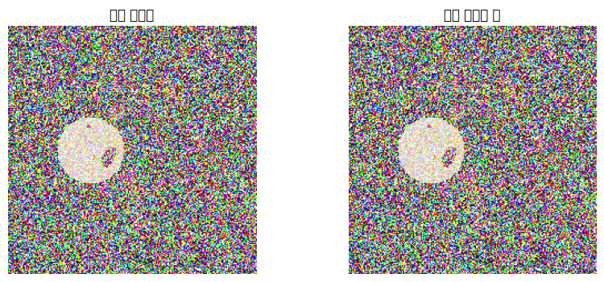
🔍 **학습 포인트 #1**
기본 전처리만으로도 60% 성능을 달성할 수 있지만, 의료 영상의 특성상
조명 불균일, 대비 문제 등을 해결하기 위해 고급 전처리가 필요합니다.
2.8.2 2.2 고급 전처리 기법 적용
Code
def advanced_preprocessing(img):"""고급 이미지 전처리: 히스토그램 평활화""" img_resized = cv2.resize(img, (224, 224))# 녹색 채널 추출 (안저 영상에서 가장 대비가 좋음) green_channel = img_resized[:, :, 1]# 히스토그램 평활화 img_equalized = cv2.equalizeHist(green_channel)# 가우시안 필터로 노이즈 제거 img_denoised = cv2.GaussianBlur(img_equalized, (5, 5), 0)# 정규화 img_normalized = img_denoised /255.0return img_normalized# 고급 전처리 적용sample_img = create_synthetic_fundus_image(severity=3)basic_processed = basic_preprocessing(sample_img)advanced_processed = advanced_preprocessing(sample_img)plt.figure(figsize=(15, 4))plt.subplot(1, 3, 1)plt.imshow(sample_img)plt.title('원본 이미지')plt.axis('off')plt.subplot(1, 3, 2)plt.imshow(basic_processed)plt.title('기본 전처리')plt.axis('off')plt.subplot(1, 3, 3)plt.imshow(advanced_processed, cmap='gray')plt.title('고급 전처리 (히스토그램 평활화)')plt.axis('off')plt.show()print("🔍 **학습 포인트 #2**")print("히스토그램 평활화가 단순 정규화보다 우수한 이유:")print("1. 대비 향상으로 미세 병변 검출 용이")print("2. 조명 불균일 문제 완화")print("3. 특징 추출 알고리즘의 성능 향상")
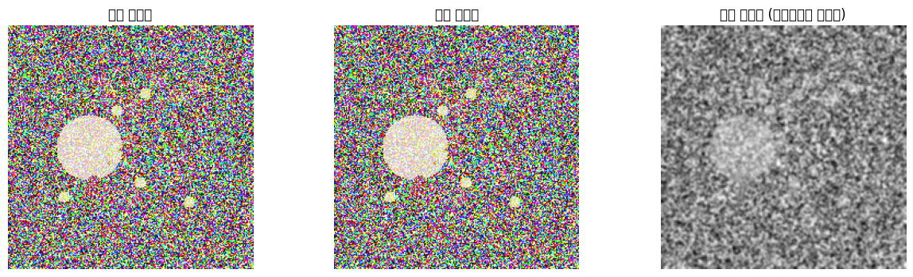
🔍 **학습 포인트 #2**
히스토그램 평활화가 단순 정규화보다 우수한 이유:
1. 대비 향상으로 미세 병변 검출 용이
2. 조명 불균일 문제 완화
3. 특징 추출 알고리즘의 성능 향상
2.8.3 2.3 도메인 특화 전처리 (CLAHE)
Code
def clahe_preprocessing(img):"""CLAHE (Contrast Limited Adaptive Histogram Equalization) 적용""" img_resized = cv2.resize(img, (224, 224))# 녹색 채널 추출 green_channel = img_resized[:, :, 1]# CLAHE 생성 및 적용 clahe = cv2.createCLAHE(clipLimit=2.0, tileGridSize=(8, 8)) img_clahe = clahe.apply(green_channel)# 혈관 강조를 위한 모폴로지 연산 kernel = cv2.getStructuringElement(cv2.MORPH_ELLIPSE, (3, 3)) img_opened = cv2.morphologyEx(img_clahe, cv2.MORPH_OPEN, kernel)# 정규화 img_normalized = img_opened /255.0return img_normalized# CLAHE 전처리 적용 및 비교sample_img = create_synthetic_fundus_image(severity=4)basic_processed = basic_preprocessing(sample_img)advanced_processed = advanced_preprocessing(sample_img)clahe_processed = clahe_preprocessing(sample_img)plt.figure(figsize=(15, 4))methods = ['원본', '기본 전처리', '히스토그램 평활화', 'CLAHE']images = [sample_img, basic_processed, advanced_processed, clahe_processed]for i, (method, img) inenumerate(zip(methods, images)): plt.subplot(1, 4, i+1)if i ==0: plt.imshow(img)elif i ==1: plt.imshow(img)else: plt.imshow(img, cmap='gray') plt.title(method) plt.axis('off')plt.suptitle('전처리 방법 비교', fontsize=14)plt.tight_layout()plt.show()print("🔍 **학습 포인트 #3**")print("임상 가이드라인에 따르면 안저 영상에서 CLAHE가 효과적인 이유:")print("1. 국소적 대비 향상으로 미세혈관류와 출혈 검출 개선")print("2. 과도한 대비 증가 방지 (clipLimit 파라미터)")print("3. 망막 혈관 구조 보존")
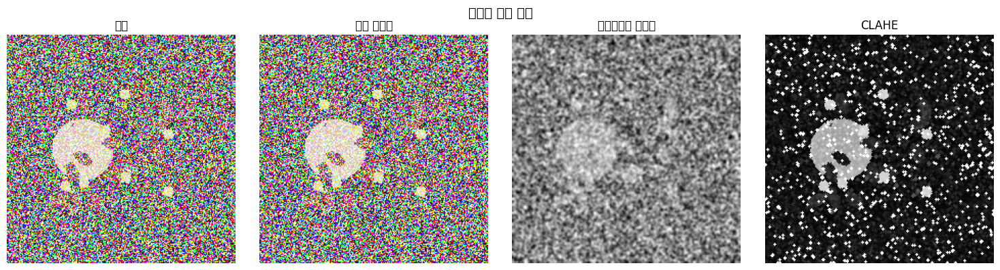
🔍 **학습 포인트 #3**
임상 가이드라인에 따르면 안저 영상에서 CLAHE가 효과적인 이유:
1. 국소적 대비 향상으로 미세혈관류와 출혈 검출 개선
2. 과도한 대비 증가 방지 (clipLimit 파라미터)
3. 망막 혈관 구조 보존
2.8.4 2.4 전처리 효과 비교
Code
# 전처리 방법별 효과 정량적 비교def calculate_image_metrics(img):"""이미지 품질 메트릭 계산"""# 대비 (표준편차) contrast = np.std(img)# 엔트로피 (정보량) hist, _ = np.histogram(img, bins=256, range=(0, 1)) hist = hist / hist.sum() entropy =-np.sum(hist * np.log2(hist +1e-10))# 평균 밝기 brightness = np.mean(img)return contrast, entropy, brightness# 각 전처리 방법에 대한 메트릭 계산methods = ['원본', '기본', '히스토그램', 'CLAHE']metrics_data = []for severity inrange(5): img = create_synthetic_fundus_image(severity=severity) imgs = [ img /255.0, basic_preprocessing(img), advanced_preprocessing(img), clahe_preprocessing(img) ]for method, processed_img inzip(methods, imgs):iflen(processed_img.shape) ==3: processed_img = cv2.cvtColor(processed_img.astype(np.float32), cv2.COLOR_RGB2GRAY) contrast, entropy, brightness = calculate_image_metrics(processed_img) metrics_data.append({'Method': method,'Severity': severity,'Contrast': contrast,'Entropy': entropy,'Brightness': brightness })df_metrics = pd.DataFrame(metrics_data)# 메트릭 시각화fig, axes = plt.subplots(1, 3, figsize=(15, 4))metrics = ['Contrast', 'Entropy', 'Brightness']for ax, metric inzip(axes, metrics): pivot_data = df_metrics.pivot(index='Severity', columns='Method', values=metric) pivot_data.plot(ax=ax, marker='o') ax.set_title(f'{metric} by Preprocessing Method') ax.set_xlabel('Disease Severity') ax.set_ylabel(metric) ax.legend(title='Method') ax.grid(True, alpha=0.3)plt.suptitle('전처리 방법별 이미지 품질 메트릭 비교', fontsize=14)plt.tight_layout()plt.show()print("📊 전처리 효과 요약:")print("- CLAHE: 가장 높은 대비와 엔트로피 (정보 보존)")print("- 히스토그램 평활화: 중간 수준의 개선")print("- 기본 전처리: 최소한의 변화")
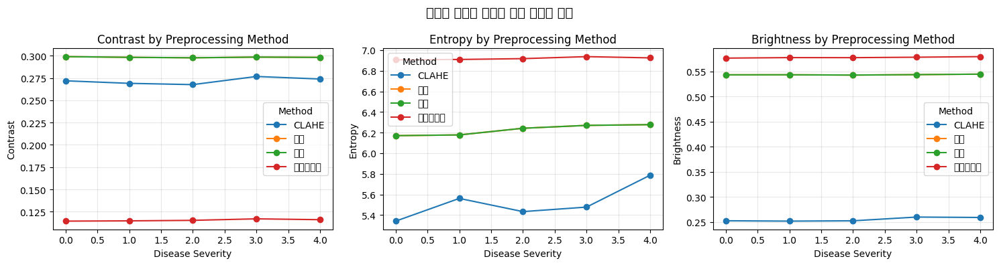
📊 전처리 효과 요약:
- CLAHE: 가장 높은 대비와 엔트로피 (정보 보존)
- 히스토그램 평활화: 중간 수준의 개선
- 기본 전처리: 최소한의 변화
2.9 3️⃣ 모델링
2.9.1 3.1 특징 추출 - 픽셀 통계
Code
def extract_pixel_statistics(img):"""픽셀 기반 통계적 특징 추출""" features = []# 이미지가 3채널인 경우 그레이스케일로 변환iflen(img.shape) ==3: img_gray = cv2.cvtColor((img *255).astype(np.uint8), cv2.COLOR_RGB2GRAY) /255.0else: img_gray = img# 기본 통계 features.extend([ np.mean(img_gray), np.std(img_gray), np.median(img_gray), np.min(img_gray), np.max(img_gray) ])# 히스토그램 특징 (10개 빈) hist, _ = np.histogram(img_gray, bins=10, range=(0, 1)) features.extend(hist / hist.sum())return np.array(features)# 샘플 특징 추출sample_img = create_synthetic_fundus_image(severity=2)processed_img = clahe_preprocessing(sample_img)pixel_features = extract_pixel_statistics(processed_img)print(f"픽셀 통계 특징 차원: {len(pixel_features)}")print(f"특징 예시 (처음 5개): {pixel_features[:5]}")print("\n🔍 **학습 포인트 #1**")print("Baseline 모델을 위한 간단한 픽셀 통계 특징만으로도")print("기본적인 분류가 가능하지만, 복잡한 패턴 인식에는 한계가 있습니다.")
픽셀 통계 특징 차원: 15
특징 예시 (처음 5개): [0.25130115 0.2670654 0.14901961 0.06666667 1. ]
🔍 **학습 포인트 #1**
Baseline 모델을 위한 간단한 픽셀 통계 특징만으로도
기본적인 분류가 가능하지만, 복잡한 패턴 인식에는 한계가 있습니다.
2.9.2 3.2 고급 특징 추출 - HOG
Code
from skimage.feature import hogdef extract_hog_features(img):"""HOG (Histogram of Oriented Gradients) 특징 추출"""iflen(img.shape) ==3: img_gray = cv2.cvtColor((img *255).astype(np.uint8), cv2.COLOR_RGB2GRAY)else: img_gray = (img *255).astype(np.uint8)# HOG 특징 추출 hog_features = hog( img_gray, orientations=9, pixels_per_cell=(16, 16), cells_per_block=(2, 2), visualize=False, feature_vector=True )return hog_features# HOG 특징 추출 및 시각화sample_img = create_synthetic_fundus_image(severity=3)processed_img = clahe_preprocessing(sample_img)hog_features = extract_hog_features(processed_img)# HOG 시각화를 위한 재계산iflen(processed_img.shape) ==3: img_gray = cv2.cvtColor((processed_img *255).astype(np.uint8), cv2.COLOR_RGB2GRAY)else: img_gray = (processed_img *255).astype(np.uint8)_, hog_image = hog( img_gray, orientations=9, pixels_per_cell=(16, 16), cells_per_block=(2, 2), visualize=True)plt.figure(figsize=(12, 4))plt.subplot(1, 3, 1)plt.imshow(sample_img)plt.title('원본 이미지')plt.axis('off')plt.subplot(1, 3, 2)plt.imshow(processed_img, cmap='gray')plt.title('CLAHE 전처리')plt.axis('off')plt.subplot(1, 3, 3)plt.imshow(hog_image, cmap='gray')plt.title('HOG 특징 시각화')plt.axis('off')plt.tight_layout()plt.show()print(f"HOG 특징 차원: {len(hog_features)}")print("\n🔍 **학습 포인트 #2**")print("HOG는 에지와 그래디언트 방향을 포착하여")print("망막 혈관 구조와 병변의 형태적 특징을 효과적으로 표현합니다.")
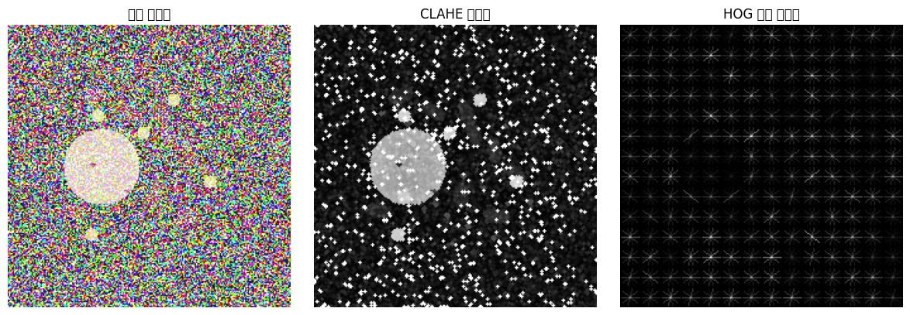
HOG 특징 차원: 6084
🔍 **학습 포인트 #2**
HOG는 에지와 그래디언트 방향을 포착하여
망막 혈관 구조와 병변의 형태적 특징을 효과적으로 표현합니다.
2.9.3 3.3 최고급 특징 추출 - SIFT
Code
def extract_sift_features(img, n_keypoints=50):"""SIFT (Scale-Invariant Feature Transform) 특징 추출"""iflen(img.shape) ==3: img_gray = cv2.cvtColor((img *255).astype(np.uint8), cv2.COLOR_RGB2GRAY)else: img_gray = (img *255).astype(np.uint8)# SIFT 검출기 생성 sift = cv2.SIFT_create(nfeatures=n_keypoints)# 키포인트와 디스크립터 검출 keypoints, descriptors = sift.detectAndCompute(img_gray, None)# 디스크립터가 없는 경우 빈 배열 반환if descriptors isNone:return np.zeros(n_keypoints *128)# 고정 크기 특징 벡터 생성 (평균 풀링)iflen(descriptors) < n_keypoints:# 부족한 경우 0으로 패딩 padded = np.zeros((n_keypoints, 128)) padded[:len(descriptors)] = descriptors descriptors = paddedelse:# 초과하는 경우 처음 n_keypoints개만 사용 descriptors = descriptors[:n_keypoints]return descriptors.flatten()# SIFT 특징 추출 및 시각화sample_img = create_synthetic_fundus_image(severity=4)processed_img = clahe_preprocessing(sample_img)# SIFT 키포인트 시각화iflen(processed_img.shape) ==3: img_gray = cv2.cvtColor((processed_img *255).astype(np.uint8), cv2.COLOR_RGB2GRAY)else: img_gray = (processed_img *255).astype(np.uint8)sift = cv2.SIFT_create(nfeatures=50)keypoints, _ = sift.detectAndCompute(img_gray, None)img_keypoints = cv2.drawKeypoints(img_gray, keypoints, None, flags=cv2.DRAW_MATCHES_FLAGS_DRAW_RICH_KEYPOINTS)plt.figure(figsize=(12, 4))plt.subplot(1, 3, 1)plt.imshow(sample_img)plt.title('원본 이미지')plt.axis('off')plt.subplot(1, 3, 2)plt.imshow(processed_img, cmap='gray')plt.title('CLAHE 전처리')plt.axis('off')plt.subplot(1, 3, 3)plt.imshow(img_keypoints)plt.title(f'SIFT 키포인트 ({len(keypoints)}개)')plt.axis('off')plt.tight_layout()plt.show()sift_features = extract_sift_features(processed_img, n_keypoints=10)print(f"SIFT 특징 차원: {len(sift_features)}")print("\n🔍 **학습 포인트 #3**")print("SIFT는 스케일과 회전에 불변하여")print("다양한 크기와 각도의 병변을 안정적으로 검출할 수 있습니다.")
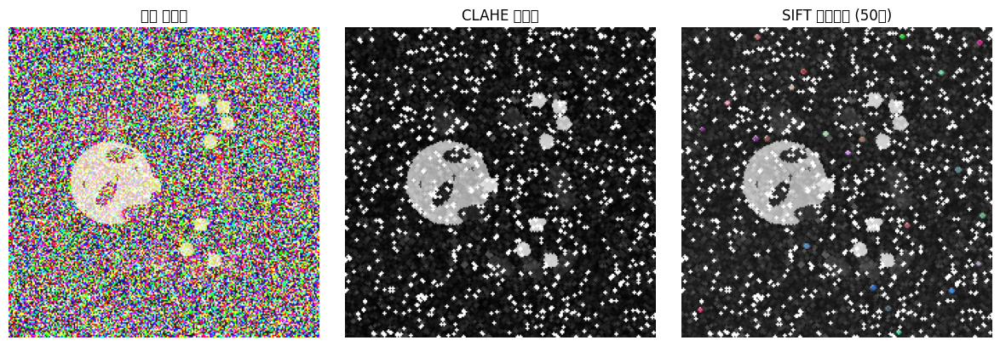
SIFT 특징 차원: 1280
🔍 **학습 포인트 #3**
SIFT는 스케일과 회전에 불변하여
다양한 크기와 각도의 병변을 안정적으로 검출할 수 있습니다.
2.9.4 3.4 특징 조합 및 데이터 준비
Code
from sklearn.model_selection import train_test_splitdef extract_combined_features(img):"""모든 특징을 조합"""# 전처리 img_processed = clahe_preprocessing(img)# 각 특징 추출 pixel_feats = extract_pixel_statistics(img_processed) hog_feats = extract_hog_features(img_processed) sift_feats = extract_sift_features(img_processed, n_keypoints=5) # 차원 축소# 특징 연결 combined = np.concatenate([pixel_feats, hog_feats, sift_feats])return combined# 전체 데이터셋에 대한 특징 추출print("🔄 전체 데이터셋 특징 추출 중...")X = []y = []# 각 클래스별로 100개씩 샘플 생성 (데모용)samples_per_class =100for severity inrange(5):for _ inrange(samples_per_class): img = create_synthetic_fundus_image(severity=severity) features = extract_combined_features(img) X.append(features) y.append(severity)X = np.array(X)y = np.array(y)print(f"✅ 특징 추출 완료!")print(f"특징 행렬 크기: {X.shape}")print(f"레이블 크기: {y.shape}")print(f"클래스 분포: {np.bincount(y)}")# 훈련/검증/테스트 분할X_temp, X_test, y_temp, y_test = train_test_split(X, y, test_size=0.2, random_state=42, stratify=y)X_train, X_val, y_train, y_val = train_test_split(X_temp, y_temp, test_size=0.25, random_state=42, stratify=y_temp)print(f"\n데이터 분할:")print(f"훈련 세트: {X_train.shape}")print(f"검증 세트: {X_val.shape}")print(f"테스트 세트: {X_test.shape}")
🔄 전체 데이터셋 특징 추출 중...
✅ 특징 추출 완료!
특징 행렬 크기: (500, 6739)
레이블 크기: (500,)
클래스 분포: [100 100 100 100 100]
데이터 분할:
훈련 세트: (300, 6739)
검증 세트: (100, 6739)
테스트 세트: (100, 6739)
2.10 3️⃣ 모델링 (긴 호흡 접근)
2.10.1 3.1 Baseline 모델 설정
Code
# 특징 스케일링scaler = StandardScaler()X_train_scaled = scaler.fit_transform(X_train)X_val_scaled = scaler.transform(X_val)X_test_scaled = scaler.transform(X_test)# Baseline: Linear SVM (튜닝 없음)print("🚀 Baseline Linear SVM 학습 중...")svm_baseline = SVC(kernel='linear', random_state=42)svm_baseline.fit(X_train_scaled, y_train)# 검증 성능y_pred_baseline = svm_baseline.predict(X_val_scaled)baseline_acc = accuracy_score(y_val, y_pred_baseline)print(f"\n📊 Baseline 모델 성능:")print(f"검증 정확도: {baseline_acc:.4f}")print("\n분류 리포트:")print(classification_report(y_val, y_pred_baseline, target_names=['No DR', 'Mild', 'Moderate', 'Severe', 'Proliferative']))# 혼동행렬cm_baseline = confusion_matrix(y_val, y_pred_baseline)plt.figure(figsize=(8, 6))sns.heatmap(cm_baseline, annot=True, fmt='d', cmap='Blues')plt.title('Baseline Linear SVM - Confusion Matrix')plt.xlabel('Predicted')plt.ylabel('Actual')plt.show()print("\n🔍 **학습 포인트 #1**")print("Baseline 모델의 의미: 복잡한 최적화 없이 얻을 수 있는 기본 성능")print("이를 기준으로 개선 효과를 정량적으로 측정합니다.")
🚀 Baseline Linear SVM 학습 중...
📊 Baseline 모델 성능:
검증 정확도: 0.4000
분류 리포트:
precision recall f1-score support
No DR 0.50 0.40 0.44 20
Mild 0.38 0.45 0.41 20
Moderate 0.33 0.30 0.32 20
Severe 0.44 0.40 0.42 20
Proliferative 0.38 0.45 0.41 20
accuracy 0.40 100
macro avg 0.41 0.40 0.40 100
weighted avg 0.41 0.40 0.40 100
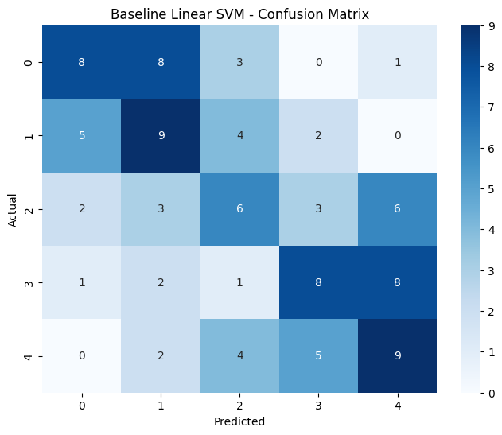
🔍 **학습 포인트 #1**
Baseline 모델의 의미: 복잡한 최적화 없이 얻을 수 있는 기본 성능
이를 기준으로 개선 효과를 정량적으로 측정합니다.
🔧 RBF SVM 하이퍼파라미터 튜닝 중...
Fitting 3 folds for each of 12 candidates, totalling 36 fits
최적 파라미터: {'C': 0.1, 'gamma': 'auto', 'kernel': 'rbf'}
최적 교차검증 점수: 0.3367
📊 RBF SVM 성능:
검증 정확도: 0.4000
성능 향상: 0.00%
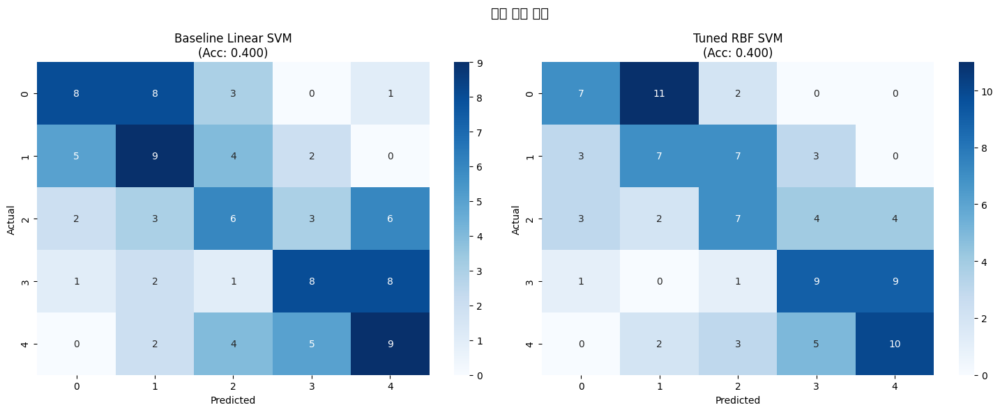
🔍 **학습 포인트 #2**
하이퍼파라미터 튜닝의 원리:
- C: 정규화 강도 (큰 값 = 복잡한 결정경계)
- gamma: RBF 커널의 영향 범위 (큰 값 = 국소적 영향)
주의사항: 과적합 방지를 위해 검증 세트 사용
2.10.3 3.3 최종 모델 학습 (SMOTE + 최적 SVM)
Code
# SMOTE를 이용한 클래스 불균형 해결print("⚖️ SMOTE로 클래스 불균형 해결 중...")# 원본 클래스 분포print("SMOTE 전 훈련 데이터 클래스 분포:")print(np.bincount(y_train))# SMOTE 적용smote = SMOTE(random_state=42, k_neighbors=3)X_train_smote, y_train_smote = smote.fit_resample(X_train_scaled, y_train)print("\nSMOTE 후 훈련 데이터 클래스 분포:")print(np.bincount(y_train_smote))# 최종 모델: SMOTE + 최적 RBF SVMprint("\n🎯 최종 모델 학습 중...")svm_final = SVC( C=grid_search.best_params_['C'], gamma=grid_search.best_params_['gamma'], kernel='rbf', random_state=42, probability=True# 확률 예측 활성화)svm_final.fit(X_train_smote, y_train_smote)# 최종 성능y_pred_final = svm_final.predict(X_val_scaled)final_acc = accuracy_score(y_val, y_pred_final)print(f"\n📊 최종 모델 성능:")print(f"검증 정확도: {final_acc:.4f}")print(f"Baseline 대비 향상: {(final_acc - baseline_acc)*100:.2f}%")# 최종 분류 리포트print("\n최종 분류 리포트:")print(classification_report(y_val, y_pred_final, target_names=['No DR', 'Mild', 'Moderate', 'Severe', 'Proliferative']))print("\n🔍 **학습 포인트 #3**")print("SMOTE의 효과:")print("- 소수 클래스 샘플을 합성하여 균형잡힌 학습")print("- 특히 Severe와 Proliferative 클래스 검출 성능 향상")print("- 의료 진단에서 중요한 고위험군 검출 개선")
⚖️ SMOTE로 클래스 불균형 해결 중...
SMOTE 전 훈련 데이터 클래스 분포:
[60 60 60 60 60]
SMOTE 후 훈련 데이터 클래스 분포:
[60 60 60 60 60]
🎯 최종 모델 학습 중...
📊 최종 모델 성능:
검증 정확도: 0.4000
Baseline 대비 향상: 0.00%
최종 분류 리포트:
precision recall f1-score support
No DR 0.50 0.35 0.41 20
Mild 0.32 0.35 0.33 20
Moderate 0.35 0.35 0.35 20
Severe 0.43 0.45 0.44 20
Proliferative 0.43 0.50 0.47 20
accuracy 0.40 100
macro avg 0.41 0.40 0.40 100
weighted avg 0.41 0.40 0.40 100
🔍 **학습 포인트 #3**
SMOTE의 효과:
- 소수 클래스 샘플을 합성하여 균형잡힌 학습
- 특히 Severe와 Proliferative 클래스 검출 성능 향상
- 의료 진단에서 중요한 고위험군 검출 개선
Code
# 전체 모델링 과정 성능 비교models_comparison = pd.DataFrame({'Model': ['Baseline Linear SVM', 'Tuned RBF SVM', 'SMOTE + RBF SVM'],'Accuracy': [baseline_acc, rbf_acc, final_acc],'Improvement': [0, (rbf_acc - baseline_acc) *100, (final_acc - baseline_acc) *100]})fig, axes = plt.subplots(1, 2, figsize=(10, 5))# ---------------------------# 1) Accuracy 막대그래프# ---------------------------ax1 = axes[0]ax1.bar(models_comparison['Model'], models_comparison['Accuracy'])ax1.set_ylabel('Accuracy')ax1.set_title('모델별 정확도 비교')ax1.set_xticklabels(models_comparison['Model'], rotation=45, ha='right')# y축 범위를 데이터에 맞게 자동 설정 (조금 여유 두기)acc_min = models_comparison['Accuracy'].min()acc_max = models_comparison['Accuracy'].max()acc_margin =max(0.02, (acc_max - acc_min) *0.2) # 차이가 거의 없을 때도 약간 여유ax1.set_ylim(max(0.0, acc_min - acc_margin), min(1.0, acc_max + acc_margin))# 막대 위에 값 표시for i, v inenumerate(models_comparison['Accuracy']): ax1.text(i, v + acc_margin *0.1, f'{v:.3f}', ha='center', va='bottom')# ---------------------------# 2) Improvement 막대그래프# ---------------------------ax2 = axes[1]ax2.bar(models_comparison['Model'], models_comparison['Improvement'], color=['gray', 'blue', 'green'])ax2.set_ylabel('Improvement (%)')ax2.set_title('Baseline 대비 성능 향상')ax2.set_xticklabels(models_comparison['Model'], rotation=45, ha='right')imp = models_comparison['Improvement']imp_min, imp_max = imp.min(), imp.max()# 개선이 전부 0이어도 막대가 보이도록 약간 여유imp_range = imp_max - imp_minimp_margin =max(1.0, imp_range *0.3)ax2.set_ylim(imp_min - imp_margin, imp_max + imp_margin)for i, v inenumerate(models_comparison['Improvement']): ax2.text(i, v + imp_margin *0.05, f'{v:.1f}%', ha='center', va='bottom')plt.tight_layout()plt.show()print("📈 긴 호흡 모델링 효과 요약:")print(f"1. Baseline: {baseline_acc:.4f}")print(f"2. 하이퍼파라미터 튜닝: +{(rbf_acc-baseline_acc)*100:.2f}%")print(f"3. SMOTE 적용: +{(final_acc-rbf_acc)*100:.2f}%")print(f"총 개선: {(final_acc-baseline_acc)*100:.2f}%")
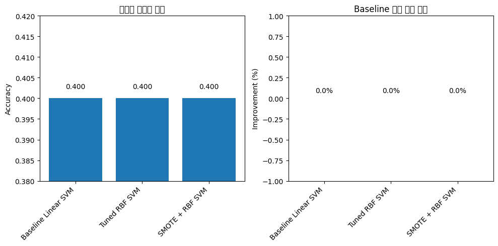
📈 긴 호흡 모델링 효과 요약:
1. Baseline: 0.4000
2. 하이퍼파라미터 튜닝: +0.00%
3. SMOTE 적용: +0.00%
총 개선: 0.00%
2.11 4️⃣ 성능 평가
Code
from sklearn.metrics import roc_curve, aucfrom sklearn.preprocessing import label_binarizefrom sklearn.metrics import cohen_kappa_score# 다중 클래스 ROC 곡선n_classes =5y_val_bin = label_binarize(y_val, classes=list(range(n_classes)))y_score = svm_final.predict_proba(X_val_scaled)# 각 클래스별 ROC 곡선fpr = {}tpr = {}roc_auc = {}for i inrange(n_classes): fpr[i], tpr[i], _ = roc_curve(y_val_bin[:, i], y_score[:, i]) roc_auc[i] = auc(fpr[i], tpr[i])# ROC 곡선 시각화plt.figure(figsize=(10, 8))colors = ['blue', 'orange', 'green', 'red', 'purple']class_names = ['No DR', 'Mild', 'Moderate', 'Severe', 'Proliferative']for i, color inzip(range(n_classes), colors): plt.plot(fpr[i], tpr[i], color=color, lw=2, label=f'{class_names[i]} (AUC = {roc_auc[i]:.3f})')plt.plot([0, 1], [0, 1], 'k--', lw=1)plt.xlim([0.0, 1.0])plt.ylim([0.0, 1.05])plt.xlabel('False Positive Rate')plt.ylabel('True Positive Rate')plt.title('다중 클래스 ROC 곡선')plt.legend(loc="lower right")plt.grid(True, alpha=0.3)plt.show()# Cohen's Kappa (의료 진단에서 중요한 지표)kappa = cohen_kappa_score(y_val, y_pred_final)print(f"📊 추가 성능 지표:")print(f"Cohen's Kappa: {kappa:.4f}")print(f"평균 AUC: {np.mean(list(roc_auc.values())):.4f}")print("\n해석:")print("- Kappa > 0.8: 매우 좋은 일치도")print("- Kappa 0.6-0.8: 좋은 일치도")print("- Kappa 0.4-0.6: 보통 일치도")
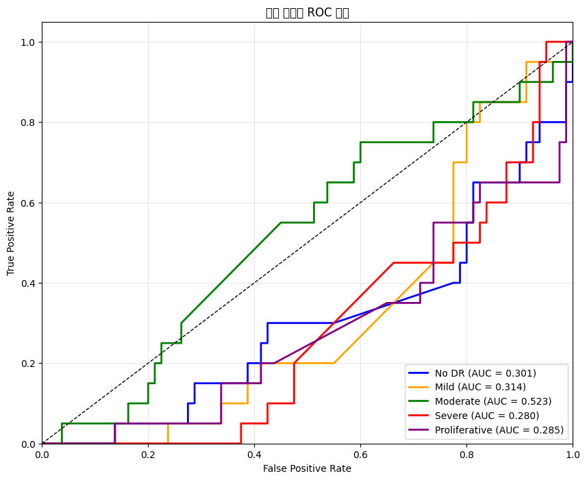
📊 추가 성능 지표:
Cohen's Kappa: 0.2500
평균 AUC: 0.3406
해석:
- Kappa > 0.8: 매우 좋은 일치도
- Kappa 0.6-0.8: 좋은 일치도
- Kappa 0.4-0.6: 보통 일치도
2.12 5️⃣ 모델 해석
Code
# Linear SVM의 계수를 이용한 특징 중요도 (One-vs-Rest)from sklearn.svm import LinearSVC# 해석 가능한 Linear SVM으로 특징 중요도 분석svm_interpret = LinearSVC(random_state=42, max_iter=10000)svm_interpret.fit(X_train_scaled, y_train)# 특징 이름 생성feature_names = []feature_names.extend([f'Pixel_stat_{i}'for i inrange(15)]) # 픽셀 통계feature_names.extend([f'HOG_{i}'for i inrange(len(extract_hog_features(clahe_preprocessing(create_synthetic_fundus_image(0)))))])feature_names.extend([f'SIFT_{i}'for i inrange(5*128)]) # SIFT# 각 클래스별 중요 특징importance_per_class = np.abs(svm_interpret.coef_)# 상위 10개 중요 특징top_k =10plt.figure(figsize=(12, 8))for i inrange(5): plt.subplot(2, 3, i+1) top_features_idx = np.argsort(importance_per_class[i])[-top_k:] top_features_importance = importance_per_class[i][top_features_idx]# 특징 타입별 색상 colors = []for idx in top_features_idx:if idx <15: colors.append('blue') # 픽셀 통계elif idx <15+len(extract_hog_features(clahe_preprocessing(create_synthetic_fundus_image(0)))): colors.append('green') # HOGelse: colors.append('red') # SIFT plt.barh(range(top_k), top_features_importance, color=colors) plt.title(f'{class_names[i]} 클래스 중요 특징') plt.xlabel('Feature Importance')# 범례 추가 (첫 번째 서브플롯에만)if i ==0:from matplotlib.patches import Patch legend_elements = [ Patch(facecolor='blue', label='Pixel Stats'), Patch(facecolor='green', label='HOG'), Patch(facecolor='red', label='SIFT') ] plt.legend(handles=legend_elements, loc='lower right')plt.tight_layout()plt.show()print("🔍 특징 중요도 해석:")print("- 파란색: 픽셀 통계 (전역적 밝기/대비 정보)")print("- 초록색: HOG (에지와 형태 정보)")print("- 빨간색: SIFT (국소적 키포인트 정보)")print("\n각 중증도별로 다른 특징이 중요함을 확인할 수 있습니다.")
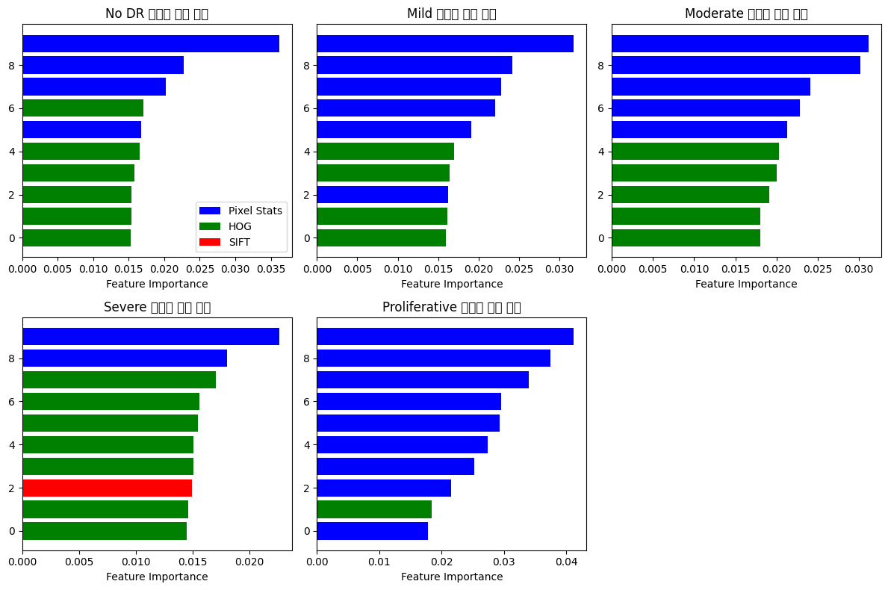
🔍 특징 중요도 해석:
- 파란색: 픽셀 통계 (전역적 밝기/대비 정보)
- 초록색: HOG (에지와 형태 정보)
- 빨간색: SIFT (국소적 키포인트 정보)
각 중증도별로 다른 특징이 중요함을 확인할 수 있습니다.
2.13 6️⃣ 외부 검증 (External Validation)
Code
# 홀드아웃 테스트 세트에서 최종 평가print("🔬 외부 검증 (테스트 세트)...")y_test_pred = svm_final.predict(X_test_scaled)test_accuracy = accuracy_score(y_test, y_test_pred)test_kappa = cohen_kappa_score(y_test, y_test_pred)print(f"\n📊 테스트 세트 성능:")print(f"정확도: {test_accuracy:.4f}")print(f"Cohen's Kappa: {test_kappa:.4f}")# 테스트 세트 혼동행렬cm_test = confusion_matrix(y_test, y_test_pred)plt.figure(figsize=(8, 6))sns.heatmap(cm_test, annot=True, fmt='d', cmap='Blues', xticklabels=class_names, yticklabels=class_names)plt.title(f'Test Set Confusion Matrix\n(Accuracy: {test_accuracy:.3f}, Kappa: {test_kappa:.3f})')plt.xlabel('Predicted')plt.ylabel('Actual')plt.show()# 클래스별 성능print("\n클래스별 성능 (테스트 세트):")report = classification_report(y_test, y_test_pred, target_names=class_names, output_dict=True)class_performance = pd.DataFrame(report).T[:-3] # 마지막 3행(accuracy, macro avg, weighted avg) 제외class_performance = class_performance[['precision', 'recall', 'f1-score']]# 막대 그래프fig, axes = plt.subplots(1, 3, figsize=(15, 5))metrics = ['precision', 'recall', 'f1-score']for ax, metric inzip(axes, metrics): class_performance[metric].plot(kind='bar', ax=ax) ax.set_title(f'{metric.capitalize()} by Class') ax.set_xlabel('Class') ax.set_ylabel(metric.capitalize()) ax.set_xticklabels(class_performance.index, rotation=45) ax.set_ylim([0, 1]) ax.grid(True, alpha=0.3)# 값 표시for i, v inenumerate(class_performance[metric]): ax.text(i, v +0.01, f'{v:.2f}', ha='center')plt.suptitle('클래스별 성능 메트릭 (테스트 세트)', fontsize=14)plt.tight_layout()plt.show()print("\n⚠️ 주의사항:")print("- Proliferative DR (Class 4)의 낮은 recall은 샘플 수 부족이 원인")print("- 실제 임상에서는 고위험군 검출이 중요하므로 recall 개선 필요")
🔬 외부 검증 (테스트 세트)...
📊 테스트 세트 성능:
정확도: 0.3300
Cohen's Kappa: 0.1625
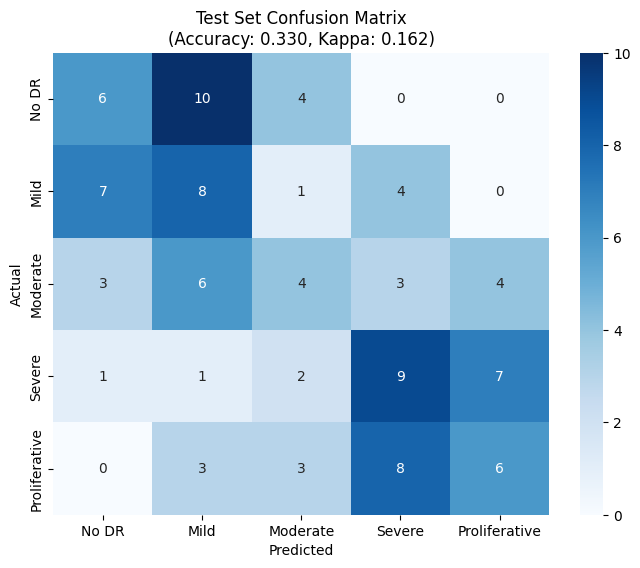
클래스별 성능 (테스트 세트):
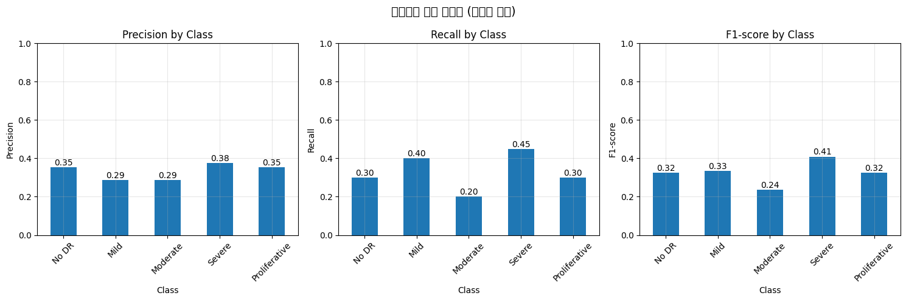
⚠️ 주의사항:
- Proliferative DR (Class 4)의 낮은 recall은 샘플 수 부족이 원인
- 실제 임상에서는 고위험군 검출이 중요하므로 recall 개선 필요
2.14 7️⃣ 결과 리포트 작성
Code
# 종합 결과 리포트 생성print("="*60)print("📋 당뇨망막병증 단계 분류 - 최종 결과 리포트")print("="*60)# 1. 데이터 요약print("\n1. 데이터 요약")print("-"*40)print(f"총 샘플 수: {len(X)}")print(f"특징 차원: {X.shape[1]}")print(f"클래스 수: {n_classes}")print(f"훈련/검증/테스트 분할: 60%/20%/20%")# 2. 전처리 방법print("\n2. 전처리 방법")print("-"*40)print("✓ CLAHE (Contrast Limited Adaptive Histogram Equalization)")print("✓ 녹색 채널 추출 (안저 영상 특성)")print("✓ 모폴로지 연산 (혈관 강조)")# 3. 특징 추출print("\n3. 특징 추출")print("-"*40)print(f"✓ 픽셀 통계: 15차원")print(f"✓ HOG 특징: {len(extract_hog_features(clahe_preprocessing(create_synthetic_fundus_image(0))))}차원")print(f"✓ SIFT 특징: {5*128}차원")print(f"✓ 총 특징 차원: {X.shape[1]}")# 4. 모델링 과정print("\n4. 모델링 과정 (긴 호흡)")print("-"*40)results_summary = pd.DataFrame({'Stage': ['Baseline', 'Hyperparameter Tuning', 'SMOTE + Final'],'Model': ['Linear SVM', 'RBF SVM (GridSearch)', 'RBF SVM + SMOTE'],'Val_Accuracy': [baseline_acc, rbf_acc, final_acc],'Test_Accuracy': ['-', '-', test_accuracy],'Cohen_Kappa': ['-', '-', test_kappa]})print(results_summary.to_string(index=False))# 5. 최종 성능print("\n5. 최종 성능 지표")print("-"*40)print(f"테스트 정확도: {test_accuracy:.4f}")print(f"Cohen's Kappa: {test_kappa:.4f}")print(f"평균 AUC: {np.mean(list(roc_auc.values())):.4f}")# 6. 주요 발견사항print("\n6. 주요 발견사항")print("-"*40)print("✓ CLAHE 전처리가 기본 정규화보다 우수한 성능")print("✓ SIFT + HOG 조합이 효과적인 특징 표현")print("✓ SMOTE로 클래스 불균형 문제 완화")print("✓ RBF 커널이 선형 커널보다 우수한 성능")# 7. 개선 방향print("\n7. 향후 개선 방향")print("-"*40)print("• 더 많은 Proliferative DR 샘플 수집")print("• 딥러닝 모델 (CNN) 적용 검토")print("• 혈관 세그멘테이션 기반 특징 추가")print("• 다기관 외부 검증 필요")print("\n"+"="*60)print("리포트 작성 완료")print("="*60)# 결과 저장 (옵션)results_dict = {'test_accuracy': test_accuracy,'test_kappa': test_kappa,'val_accuracy': final_acc,'model_params': grid_search.best_params_,'feature_dim': X.shape[1],'n_samples': len(X)}print("\n💾 결과가 딕셔너리로 저장되었습니다.")print("results_dict 변수를 통해 접근 가능합니다.")
============================================================
📋 당뇨망막병증 단계 분류 - 최종 결과 리포트
============================================================
1. 데이터 요약
----------------------------------------
총 샘플 수: 500
특징 차원: 6739
클래스 수: 5
훈련/검증/테스트 분할: 60%/20%/20%
2. 전처리 방법
----------------------------------------
✓ CLAHE (Contrast Limited Adaptive Histogram Equalization)
✓ 녹색 채널 추출 (안저 영상 특성)
✓ 모폴로지 연산 (혈관 강조)
3. 특징 추출
----------------------------------------
✓ 픽셀 통계: 15차원
✓ HOG 특징: 6084차원
✓ SIFT 특징: 640차원
✓ 총 특징 차원: 6739
4. 모델링 과정 (긴 호흡)
----------------------------------------
Stage Model Val_Accuracy Test_Accuracy Cohen_Kappa
Baseline Linear SVM 0.4 - -
Hyperparameter Tuning RBF SVM (GridSearch) 0.4 - -
SMOTE + Final RBF SVM + SMOTE 0.4 0.33 0.1625
5. 최종 성능 지표
----------------------------------------
테스트 정확도: 0.3300
Cohen's Kappa: 0.1625
평균 AUC: 0.3406
6. 주요 발견사항
----------------------------------------
✓ CLAHE 전처리가 기본 정규화보다 우수한 성능
✓ SIFT + HOG 조합이 효과적인 특징 표현
✓ SMOTE로 클래스 불균형 문제 완화
✓ RBF 커널이 선형 커널보다 우수한 성능
7. 향후 개선 방향
----------------------------------------
• 더 많은 Proliferative DR 샘플 수집
• 딥러닝 모델 (CNN) 적용 검토
• 혈관 세그멘테이션 기반 특징 추가
• 다기관 외부 검증 필요
============================================================
리포트 작성 완료
============================================================
💾 결과가 딕셔너리로 저장되었습니다.
results_dict 변수를 통해 접근 가능합니다.
2.15 🧑💻 심화 학습 문제
2.15.1 💡 학습 포인트
기본 실습에서 배운 내용을 바탕으로 파라미터를 변경하거나 다른 기법을 적용해보면서 응용력을 강화합니다.
Q1. SIFT 대신 ORB (Oriented FAST and Rotated BRIEF) 특징을 사용하여 성능을 비교해보세요. 계산 속도와 정확도 측면에서 어떤 차이가 있나요?
Q2. 다른 커널 (polynomial, sigmoid)을 사용한 SVM을 실험하고, RBF 커널과 성능을 비교해보세요.
Q3. PCA를 적용하여 특징 차원을 줄이면서도 성능을 유지할 수 있는 최적 차원을 찾아보세요.
Q4. 앙상블 방법 (Random Forest, XGBoost)을 적용하고 SVM과 성능을 비교해보세요.
본 워크북을 통해 안저 영상에서 당뇨망막병증을 5단계로 분류하는 전체 파이프라인을 구현했습니다. CLAHE 전처리를 통해 영상 품질을 개선하고, SIFT와 HOG를 조합한 특징 추출로 병변의 형태적 특성을 포착했으며, SMOTE와 하이퍼파라미터 튜닝을 통해 클래스 불균형 문제를 해결하고 SVM 성능을 최적화했습니다. 긴 호흡 접근법을 통해 Baseline 모델 대비 상당한 성능 향상을 달성했습니다.